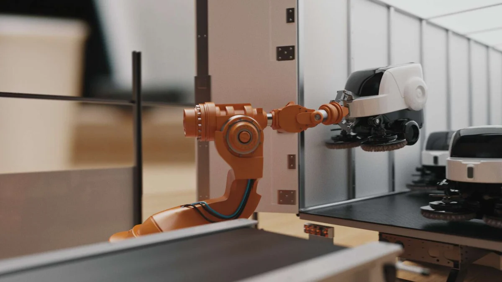

Get Started
Resources
Performance 🚀
Tutorials
Documentations
Company
About
News 🌟
Blogs
Pricing
Try Free
Source Code
Report a Bug
Blog
About
Get Started
Tutorials
Run Walkthrough
Documentation
TinyMLaaS - summer 2023
Architecture
Background information and some literature sources
Demonstratation of TinyMLaaS WebApp
Suggestions for further development
Project starting point
Technological choices
TinyML-backend
TinyML-frontend
Arduino sketch
TinyML-MCU
TinyMLaaS-main
Use case scenarios
Blog
Performance
Categories
All
(30)
About
(1)
Competitor
(2)
Compiler
(1)
DNN
(3)
Ericsson
(2)
HU
(1)
Hiring
(1)
MVP
(1)
News
(1)
SaaS
(5)
Team
(1)
Tech
(21)
TinyMLaaS
(2)
UseCase
(4)
WoW
(1)
Blog
Hack Your City: Empowering Smart Solutions with No Code Vision LLM
Enabling citizens and businesses to create smart city solutions effortlessly
UseCase
Oct 11, 2024
Hiroshi Doyu
Knowledge Distillation Implementation 2/3
Tech
2. Hint-Based Distillation
Oct 10, 2024
Leila Mozaffari
Knowledge Distillation Implementation 3/3
Tech
3. Self-Distillation
Oct 10, 2024
Leila Mozaffari
Knowledge Distillation Implementation 1/3
Tech
1. Soft Label Distillation
Oct 10, 2024
Leila Mozaffari
Low-rank approximation 1/4
Tech
Overview of Low-rank approximation - Part1
Oct 7, 2024
Leila Mozaffari
Low-rank approximation 2/4
Tech
Overview of Low-rank approximation – Part2
Oct 7, 2024
Leila Mozaffari
Low-rank approximation 3/4
Tech
Overview of Low-rank approximation – Part3
Oct 7, 2024
Leila Mozaffari
Low-rank approximation 4/4
Tech
Overview of Low-rank approximation – Part4
Oct 7, 2024
Leila Mozaffari
Knowledge Distillation
Tech
Overview of Knowledge Distillation: Simplifying Deep Learning Models
Oct 1, 2024
Leila Mozaffari
Demistifying TinyMLaaS
Tech
TinyMLaaS
Brief overview of the technology behind NinjaLABO’s TinyML as-a-Service
Sep 27, 2024
Nghi Vo
LLM on Camera as an Universal Sensor for Smart Mobility - Privacy-Preserving Edge AI PoC
Beyond 1984: Smart Cities Powered by Ethical AI and Citizen Empowerment
UseCase
NinjaLABO proposes a 1.5-month
Proof of Concept (PoC)
to demonstrate the transformative potential of
Local Large Language Models (LLMs) on edge cameras
as a
Universal Sensor
…
Sep 26, 2024
Hiroshi Doyu
tinyRuntime review
Tech
Reviewing the current status of our lightweight runtime
Sep 26, 2024
Haruka Doyu
ToDo list in Autumn 2024
WoW
This document provides an overview of NinjaLABO’s tasks and objectives for the autumn of 2024. The following sections outline key areas of focus, ranging from way of working…
Sep 11, 2024
Hiroshi Doyu
Summer Insights: Evolving tinyMLaaS with Flexible Pipelines and Distributed Execution
Tech
DNN
This summer, our team embarked on an ambitious journey, iterating through eight MVP releases of our tinyMLaaS platform, which focuses on deep neural network (DNN) model…
Sep 4, 2024
Hiroshi Doyu
Looking for Software Engineer - AI Model Compression & DNN Runtime
Hiring
NinjaLABO is a fresh, finnish startup at the forefront of AI innovation, focusing on AI model compression and deep neural network (DNN) runtime optimization for IoT…
Aug 29, 2024
Hiroshi Doyu
Optimizing a DNN Model for Processing Hyperspectral Imaging (HSI) Data
Tech
DNN
Hyperspectral Imaging (HSI) is a powerful technique that captures a wide spectrum of light across dozens to hundreds of narrow wavelength bands. Unlike traditional RGB…
Aug 20, 2024
Hiroshi Doyu
Comprehensive Overview of DNN Model Compression Techniques
Tech
DNN
Deep Neural Networks (DNNs) have achieved remarkable success across various domains, from image recognition to natural language processing. However, their deployment…
Aug 18, 2024
Hiroshi Doyu
Building a Real-Time Face Identification System: A Comprehensive Guide
Tech
UseCase
Explore how to build a real-time face identification system using
Ultralytics YOLOv8
, a state-of-the-art object detection model known for its speed and accuracy. We’ll compare various tools, including managed services like
AWS Rekognition
and
Azure Face API
, to help you choose the best solution for your needs. Whether you’re a developer seeking full control over your models or looking for an easy-to-integrate, scalable solution, this guide will provide you with the knowledge and tools to create a powerful
face identification
system.
Aug 18, 2024
Hiroshi Doyu
Demystifying PyTorch Static Quantization
Tech
A deep dive into how PyTorch performs inference with quantized models.
Aug 12, 2024
Haruka Doyu
TinyML as-a-Service with Helsinki University summer course 2023
HU
TinyMLaaS
This is the main repository of Tiny Machine Learning as a Service project for Software Engineering Project course at University of Helsinki, summer 2023.
Aug 6, 2024
Hiroshi Doyu
About
About
Team
The team of experts in software development, research, and design is working to enable businesses to integrate AI & Machine Learning applications on a wide range of devices without relying on expensive networking & cloud computing services thanks to their solution, TinyML as a Service.
Aug 6, 2024
Hiroshi Doyu
AI Compression as-a-Service MVP6 review
News
MVP
Our internal review of MVP6 usage
Aug 6, 2024
Nghi Vo
Edge Impulse Review
Tech
SaaS
Competitor
Edge Impulse - A Comprehensive Review of the Leading Edge AI Platform
Aug 5, 2024
Nghi Vo
TinyML as-a-Service Overview
Tech
SaaS
Brief overview of NinjaLABO’s TinyML as-a-Service / AI compression as-a-Service
Jul 17, 2024
Hiroshi Doyu
IREE review
Tech
Compiler
Brief overview of IREE
Jul 12, 2024
Haruka Doyu
Imagimob Studio Review
Tech
SaaS
Competitor
Brief overview of Imagimob Studio - A solution for Edge AI applications
Jul 8, 2024
Nghi Vo
AI compression SaaS
Tech
SaaS
Brief overview of AI Compression
Jul 2, 2024
Hiroshi Doyu
TinyML Use Cases
Tech
SaaS
UseCase
Use cases for TinyML offered by NinjaLABO
Jul 2, 2024
Hiroshi Doyu

How can we democratize machine learning on IoT devices?
Ericsson
Making tiny machine learning widely available on edge IoT devices could prove to be a major leap in smart sensing across industries. Below, we plot the technical milestones to making that happen as part of our ongoing research into TinyML as-a-service.
Aug 6, 2020
Hiroshi Doyu
TinyML as-a-Service and the challenges of machine learning at the edge
Ericsson
The TinyML as-a-Service project at Ericsson Research sets out to address the challenges that today limit the potential of machine learning (ML) paradigms at the edge of the embedded IoT world. In this post, the second post in our TinyML series, we take a closer look at the technical and non-technical challenges on our journey to making that happen. Learn more below.
Aug 6, 2019
Hiroshi Doyu
No matching items
Use case scenarios
Performance